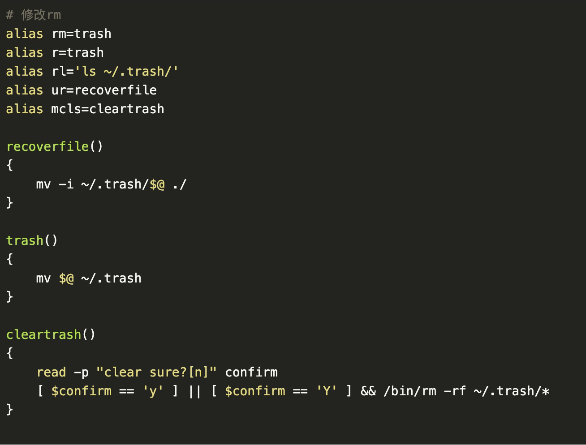

第1节：EXT3文件系统结构
随着Linux操作系统的不断完善，越来越多的用户选择在自己的主机上安装、使用Linux操作系统。恢复Linux主机中被删除文件是计算机取证工作的一项重要内容。删除文件的恢复与Linux主机使用的文件系统紧密相关，在EXT2文件系统下，可以根据被删除文件的inode结点中的地址指针来恢复文件，而在EXT3文件系统下，这种方法不可行，因为文件被删除之后，inode结点中的地址指针被清零。与EXT2不同、EXT3是基于日志的文件系统，用户的每一个操作都会保存在日志文件中，可以根据日志文件中保存的地址信息来恢复被删除的文件。
在Linux/Unix系统中，磁盘上的每个文件都有一个唯一的、储存文件元信息的区域就叫做inode，中文译名为"索引节点"。每个文件对应的inode中，包含了与该文件有关的一些信息。
在Linux系统下，我们通常通过命令“rm –rf“将我们不需要的数据直接从硬盘删除。因为Linux下也没有与Windows下回收站类似的功能，这就意味着，数据在删除后通过常规的手段是无法恢复的，因此使用这个命令要非常慎重。
在这里介绍一个小手段，给ubuntu系统制作一个回收站。
- （1）在用户目录下新建.trash目录作为回收站
- （2）修改配置文件.bashrc

- （3）执行source .bashrc使配置文件生效
这样，我们使用rm命令实际上就是将要删除的文件移动到回收站。